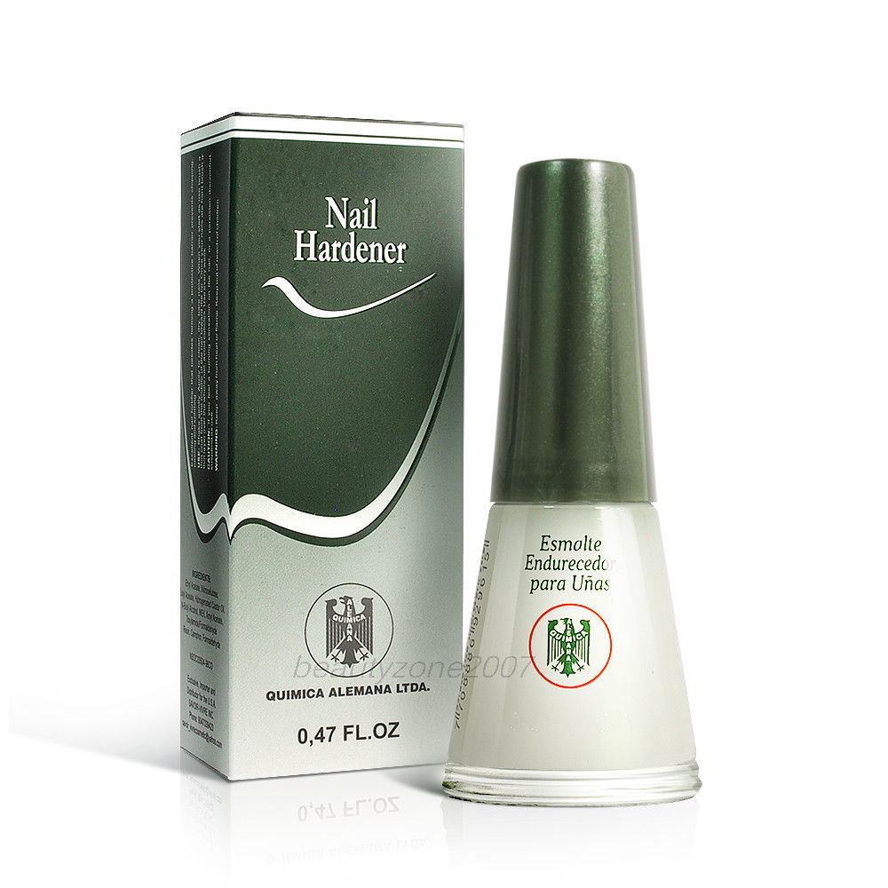

Nail Hardener
Endurecedor de uñas

Nail Hardener
$250.00
It is a unique nail treatment formulated to strengthen and repair thin brittle nails. This product can be applied like a base coat, before you apply nail polish. Quimica Alemana utilizes a highly concentrated formula for repairing nails and should only be applied in a thin coat, no more than once per week. This extraordinary treatment will make your nails visibly healthier and stronger in as little as 1 to 3 weeks of use!.
Mayelin Nails and Bar
© 2019 All rights reserved. Design by Joel Hernandez